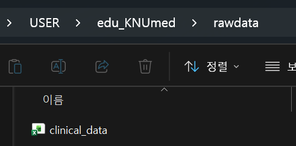
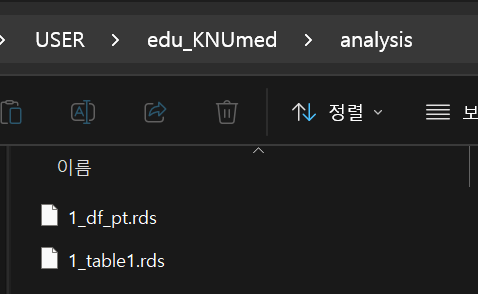
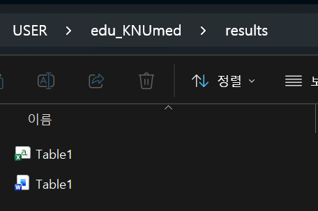

library(tidyverse)
library(readxl)
library(gtsummary)
library(flextable)
# ===== 디렉토리 설정 =====
indir <- "rawdata/"
outdir <- "analysis/"
resdir <- "results/"
# ===== 파라미터 =====
DATA_FILE <- paste0(indir, "clinical_data.xlsx")
GROUP_VAR <- "Death"1) 데이터 읽기 & Table 1 만들기
Table 1이란?
논문의 첫 번째 표. 연구 대상의 기본 특성(baseline characteristics)을 요약합니다.
엑셀로 만들면:
- 연속형은 median(range) 직접 계산 → 복붙
- 범주형은 n(%) 직접 계산 → 복붙
- p-value 따로 계산 → 복붙
- 변수 하나 바뀌면? 처음부터 다시
R로 만들면: 코드 한 번 실행 → 끝
① 파라미터 설정 & 패키지 로드

Tip경로 관리:
paste0()
파일 경로를 하드코딩하면 디렉토리가 바뀔 때 일일이 수정해야 합니다. indir, outdir, resdir을 상단에서 한 번만 정의하고, 이후엔 paste0()로 조합하세요.
# ❌ 하드코딩
df <- read_excel("rawdata/clinical_data.xlsx")
# ✅ paste0 활용
df <- read_excel(paste0(indir, "clinical_data.xlsx"))디렉토리 구조가 바뀌어도 상단 3줄만 고치면 됩니다.
② 데이터 읽기 & 구조 파악
df <- read_excel(DATA_FILE)
# 데이터 확인
dim(df) # 76행 x 33열[1] 75 33str(df) # 변수 타입 한눈에tibble [75 × 33] (S3: tbl_df/tbl/data.frame)
$ Key_pt : num [1:75] 2 6 6 7 9 9 10 15 17 18 ...
$ Key_lesion : chr [1:75] "liver 2-1" "lung 6-1" "lung 6-2" "liver 7-1" ...
$ IN_sur : num [1:75] 1 1 0 1 1 0 1 1 1 1 ...
$ IN_lesion : num [1:75] 1 1 1 1 1 1 1 1 1 1 ...
$ Sex : chr [1:75] "M" "F" "F" "F" ...
$ Age_Tx : num [1:75] 76 76 76 55 68 68 77 63 77 76 ...
$ OMD_Type : chr [1:75] "Metachronous oligorecurrence" "Repeat oligorecurrence" "Repeat oligorecurrence" "Induced oligorecurrence" ...
$ OMD_class : chr [1:75] "oligometastasis" "oligometastasis" "oligometastasis" "oligometastasis" ...
$ Tx_site : chr [1:75] "liver" "lung" "lung" "liver" ...
$ Primary : chr [1:75] "Colon" "Colon" "Colon" "Rectum" ...
$ Bx_primary : chr [1:75] "adenoca" "adenoca" "adenoca" "adenoca" ...
$ Bx_primary_diff: chr [1:75] "mod" "mod" "mod" "well" ...
$ Multiplicity : chr [1:75] "single" "multiple" "multiple" "single" ...
$ OMD_no : num [1:75] 1 3 3 1 2 2 1 1 1 2 ...
$ size_mm : num [1:75] 15 25 7 42 5 6 27.5 19 16.7 4 ...
$ DD : num [1:75] 1600 1200 1200 1000 1800 1800 1250 1800 1200 1300 ...
$ fr : num [1:75] 3 4 4 5 3 3 4 3 4 4 ...
$ TD : num [1:75] 4800 4800 4800 5000 5400 5400 5000 5400 4800 5200 ...
$ GTV_cc : num [1:75] 5.839 5.8 0.3 25.904 0.097 ...
$ ITV_cc : num [1:75] 8.544 9.7 0.7 25.904 0.221 ...
$ PTV_cc : num [1:75] 18.87 33.9 7.5 53.89 3.93 ...
$ Death : num [1:75] 1 1 1 1 1 1 1 0 1 0 ...
$ OS : num [1:75] 20.7 34.5 34.5 26.6 11.7 ...
$ LF : num [1:75] 1 0 0 0 0 0 0 1 0 0 ...
$ LFFS : num [1:75] 9.23 33.51 33.51 24.51 6.51 ...
$ CTxAfterRT : num [1:75] 0 0 0 0 0 0 0 1 0 0 ...
$ CTxBeforeRT : num [1:75] 0 1 1 1 1 1 0 1 1 1 ...
$ bCTx_Line : num [1:75] 0 3 3 3 2 2 0 2 1 1 ...
$ PTVmean_BED10 : num [1:75] 149 124 127 114 178 ...
$ PTV_D2_BED10 : num [1:75] 162 142 153 116 207 ...
$ PTV_D5_BED10 : num [1:75] 161 141 151 115 203 ...
$ PTV_D95_BED10 : num [1:75] 120.5 103.7 98.1 95.9 148.6 ...
$ PTV_D98_BED10 : num [1:75] 113.5 97 92.2 86.8 143.3 ...names(df) # 변수 이름 [1] "Key_pt" "Key_lesion" "IN_sur" "IN_lesion"
[5] "Sex" "Age_Tx" "OMD_Type" "OMD_class"
[9] "Tx_site" "Primary" "Bx_primary" "Bx_primary_diff"
[13] "Multiplicity" "OMD_no" "size_mm" "DD"
[17] "fr" "TD" "GTV_cc" "ITV_cc"
[21] "PTV_cc" "Death" "OS" "LF"
[25] "LFFS" "CTxAfterRT" "CTxBeforeRT" "bCTx_Line"
[29] "PTVmean_BED10" "PTV_D2_BED10" "PTV_D5_BED10" "PTV_D95_BED10"
[33] "PTV_D98_BED10" head(df) # 앞만 출력# A tibble: 6 × 33
Key_pt Key_lesion IN_sur IN_lesion Sex Age_Tx OMD_Type OMD_class Tx_site
<dbl> <chr> <dbl> <dbl> <chr> <dbl> <chr> <chr> <chr>
1 2 liver 2-1 1 1 M 76 Metachronou… oligomet… liver
2 6 lung 6-1 1 1 F 76 Repeat olig… oligomet… lung
3 6 lung 6-2 0 1 F 76 Repeat olig… oligomet… lung
4 7 liver 7-1 1 1 F 55 Induced oli… oligomet… liver
5 9 lung 9-1 1 1 F 68 Induced oli… oligopro… lung
6 9 lung 9-2 0 1 F 68 Induced oli… oligopro… lung
# ℹ 24 more variables: Primary <chr>, Bx_primary <chr>, Bx_primary_diff <chr>,
# Multiplicity <chr>, OMD_no <dbl>, size_mm <dbl>, DD <dbl>, fr <dbl>,
# TD <dbl>, GTV_cc <dbl>, ITV_cc <dbl>, PTV_cc <dbl>, Death <dbl>, OS <dbl>,
# LF <dbl>, LFFS <dbl>, CTxAfterRT <dbl>, CTxBeforeRT <dbl>, bCTx_Line <dbl>,
# PTVmean_BED10 <dbl>, PTV_D2_BED10 <dbl>, PTV_D5_BED10 <dbl>,
# PTV_D95_BED10 <dbl>, PTV_D98_BED10 <dbl>데이터 구조 파악
이 데이터는 환자-병변(lesion) pair입니다. 한 환자가 여러 병변을 가질 수 있어요.
# 환자 수 vs 병변 수
n_distinct(df$Key_pt) # 환자 수[1] 55nrow(df) # 병변 수 (= 행 수)[1] 75# 환자당 병변 수 확인
df %>% count(Key_pt, sort = TRUE)# A tibble: 55 × 2
Key_pt n
<dbl> <int>
1 89 4
2 61 3
3 6 2
4 9 2
5 18 2
6 19 2
7 22 2
8 39 2
9 50 2
10 52 2
# ℹ 45 more rows
Warning분석 단위 주의
- 환자 단위 분석 (OS, Death) →
IN_sur == 1인 행만 사용 - 병변 단위 분석 (LF, LFFS) → 전체 행 사용
# 환자 단위: 환자당 1행만 남기기
df_pt <- df %>% filter(IN_sur == 1)
nrow(df_pt)[1] 55③ 필요한 column select
Table 1에 넣을 변수만 골라냅니다. select()로 필요한 열만 뽑으세요.
df_tbl <- df_pt %>%
select(Sex, Age_Tx, Primary, Multiplicity, size_mm, TD, GTV_cc, PTVmean_BED10, Death)
names(df_pt) [1] "Key_pt" "Key_lesion" "IN_sur" "IN_lesion"
[5] "Sex" "Age_Tx" "OMD_Type" "OMD_class"
[9] "Tx_site" "Primary" "Bx_primary" "Bx_primary_diff"
[13] "Multiplicity" "OMD_no" "size_mm" "DD"
[17] "fr" "TD" "GTV_cc" "ITV_cc"
[21] "PTV_cc" "Death" "OS" "LF"
[25] "LFFS" "CTxAfterRT" "CTxBeforeRT" "bCTx_Line"
[29] "PTVmean_BED10" "PTV_D2_BED10" "PTV_D5_BED10" "PTV_D95_BED10"
[33] "PTV_D98_BED10" # 유용한 select 패턴들
df_pt %>% select(starts_with("PTV")) # PTV로 시작하는 모든 columns# A tibble: 55 × 6
PTV_cc PTVmean_BED10 PTV_D2_BED10 PTV_D5_BED10 PTV_D95_BED10 PTV_D98_BED10
<dbl> <dbl> <dbl> <dbl> <dbl> <dbl>
1 18.9 149. 162. 161. 120. 113.
2 33.9 124. 142. 141. 104. 97.0
3 53.9 114. 116. 115. 95.9 86.8
4 3.93 178. 207. 203. 149. 143.
5 26.7 135. 158. 156. 111. 106.
6 20.3 167. 183. 181. 151. 146.
7 11.2 131. 157. 154. 106. 100.
8 9.61 149. 181. 177. 120. 112.
9 6.91 130. 169. 162. 106. 101.
10 12.3 142. 172. 168. 108. 101.
# ℹ 45 more rowsdf_pt %>% select(Key_pt, Sex:OMD_Type) # Sex에서 OMD_Type까지 선택# A tibble: 55 × 4
Key_pt Sex Age_Tx OMD_Type
<dbl> <chr> <dbl> <chr>
1 2 M 76 Metachronous oligorecurrence
2 6 F 76 Repeat oligorecurrence
3 7 F 55 Induced oligorecurrence
4 9 F 68 Induced oligoprogression
5 10 M 77 Metachronous oligorecurrence
6 15 F 63 Repeat oligoprogression
7 17 F 77 Metachronous oligorecurrence
8 18 M 76 Synchronous oligometastatic
9 19 M 64 Repeat oligoprogression
10 20 M 83 Metachronous oligorecurrence
# ℹ 45 more rows가장 간단한 Table 1
df_tbl %>%
tbl_summary()| Characteristic | N = 551 |
|---|---|
| Sex | |
| F | 20 (36%) |
| M | 35 (64%) |
| Age_Tx | 71 (63, 76) |
| Primary | |
| Colon | 23 (42%) |
| Rectum | 32 (58%) |
| Multiplicity | |
| multiple | 21 (38%) |
| single | 34 (62%) |
| size_mm | 13 (8, 17) |
| TD | |
| 4500 | 1 (1.8%) |
| 4800 | 14 (25%) |
| 5000 | 20 (36%) |
| 5100 | 1 (1.8%) |
| 5200 | 12 (22%) |
| 5400 | 4 (7.3%) |
| 6000 | 3 (5.5%) |
| GTV_cc | 1.5 (0.4, 5.4) |
| PTVmean_BED10 | 136 (125, 146) |
| Death | 31 (56%) |
| 1 n (%); Median (Q1, Q3) | |
이것만으로도:
- 연속형 → median (IQR) 자동 계산
- 범주형 → n (%) 자동 계산
- 결측치 자동 표시
④ 그룹별 비교 + p-value
tbl <- df_tbl %>%
tbl_summary(
by = Death, # 그룹 변수
statistic = list(
all_continuous() ~ "{median} ({p25}, {p75})",
all_categorical() ~ "{n} ({p}%)"
),
digits = list(
all_continuous() ~ 1,
all_categorical() ~ c(0, 1)
)
) %>%
add_p() %>% # p-value 자동 계산
add_overall() %>% # Overall 컬럼 추가
bold_labels()
tbl| Characteristic | Overall N = 551 |
0 N = 241 |
1 N = 311 |
p-value |
|---|---|---|---|---|
| Sex | ||||
| F | 20 (36.4%) | 3 (12.5%) | 17 (54.8%) | |
| M | 35 (63.6%) | 21 (87.5%) | 14 (45.2%) | |
| Age_Tx | 71.0 (63.0, 76.0) | 68.0 (60.5, 76.0) | 74.0 (64.0, 77.0) | |
| Primary | ||||
| Colon | 23 (41.8%) | 10 (41.7%) | 13 (41.9%) | |
| Rectum | 32 (58.2%) | 14 (58.3%) | 18 (58.1%) | |
| Multiplicity | ||||
| multiple | 21 (38.2%) | 10 (41.7%) | 11 (35.5%) | |
| single | 34 (61.8%) | 14 (58.3%) | 20 (64.5%) | |
| size_mm | 12.8 (8.0, 17.0) | 10.0 (7.0, 13.7) | 16.0 (8.0, 20.0) | |
| TD | ||||
| 4500 | 1 (1.8%) | 0 (0.0%) | 1 (3.2%) | |
| 4800 | 14 (25.5%) | 4 (16.7%) | 10 (32.3%) | |
| 5000 | 20 (36.4%) | 10 (41.7%) | 10 (32.3%) | |
| 5100 | 1 (1.8%) | 0 (0.0%) | 1 (3.2%) | |
| 5200 | 12 (21.8%) | 9 (37.5%) | 3 (9.7%) | |
| 5400 | 4 (7.3%) | 1 (4.2%) | 3 (9.7%) | |
| 6000 | 3 (5.5%) | 0 (0.0%) | 3 (9.7%) | |
| GTV_cc | 1.5 (0.4, 5.4) | 0.6 (0.3, 1.7) | 3.3 (0.8, 6.7) | |
| PTVmean_BED10 | 135.7 (125.4, 146.4) | 139.0 (128.8, 143.9) | 133.8 (123.9, 149.0) | |
| 1 n (%); Median (Q1, Q3) | ||||
Tipp-value 자동 선택
add_p()는 변수 타입에 따라 알아서 검정법을 선택합니다:
- 범주형 → chi-squared test (기대빈도 < 5이면 Fisher’s exact)
- 연속형 → Wilcoxon rank-sum test
검정법을 직접 지정하려면:
add_p(test = list(
all_continuous() ~ "t.test",
all_categorical() ~ "fisher.test"
))⑤ 변수명 정리 (Labeling)
코드에서는 Age_Tx, size_mm이지만, 논문에서는 Age at treatment, Tumor size (mm)로 나와야 합니다.
# 변수-라벨 매핑을 한 곳에서 관리
my_labels <- list(
Age_Tx ~ "Age at treatment",
Sex ~ "Sex",
Primary ~ "Primary site",
Multiplicity ~ "Multiplicity",
size_mm ~ "Tumor size (mm)",
TD ~ "Total dose (cGy)",
GTV_cc ~ "GTV volume (cc)",
PTVmean_BED10 ~ "PTV mean BED₁₀ (Gy)"
)
tbl <- df_tbl %>%
mutate(
Death = factor(Death, levels = c(0, 1), labels = c("Alive", "Dead"))
) %>%
tbl_summary(
by = Death,
label = my_labels,
statistic = list(
all_continuous() ~ "{median} ({p25}, {p75})",
all_categorical() ~ "{n} ({p}%)"
),
digits = list(
all_continuous() ~ 1,
all_categorical() ~ c(0, 1)
)
) %>%
add_p() %>%
add_overall() %>%
bold_labels()
tbl| Characteristic | Overall N = 551 |
Alive N = 241 |
Dead N = 311 |
p-value |
|---|---|---|---|---|
| Sex | ||||
| F | 20 (36.4%) | 3 (12.5%) | 17 (54.8%) | |
| M | 35 (63.6%) | 21 (87.5%) | 14 (45.2%) | |
| Age at treatment | 71.0 (63.0, 76.0) | 68.0 (60.5, 76.0) | 74.0 (64.0, 77.0) | |
| Primary site | ||||
| Colon | 23 (41.8%) | 10 (41.7%) | 13 (41.9%) | |
| Rectum | 32 (58.2%) | 14 (58.3%) | 18 (58.1%) | |
| Multiplicity | ||||
| multiple | 21 (38.2%) | 10 (41.7%) | 11 (35.5%) | |
| single | 34 (61.8%) | 14 (58.3%) | 20 (64.5%) | |
| Tumor size (mm) | 12.8 (8.0, 17.0) | 10.0 (7.0, 13.7) | 16.0 (8.0, 20.0) | |
| Total dose (cGy) | ||||
| 4500 | 1 (1.8%) | 0 (0.0%) | 1 (3.2%) | |
| 4800 | 14 (25.5%) | 4 (16.7%) | 10 (32.3%) | |
| 5000 | 20 (36.4%) | 10 (41.7%) | 10 (32.3%) | |
| 5100 | 1 (1.8%) | 0 (0.0%) | 1 (3.2%) | |
| 5200 | 12 (21.8%) | 9 (37.5%) | 3 (9.7%) | |
| 5400 | 4 (7.3%) | 1 (4.2%) | 3 (9.7%) | |
| 6000 | 3 (5.5%) | 0 (0.0%) | 3 (9.7%) | |
| GTV volume (cc) | 1.5 (0.4, 5.4) | 0.6 (0.3, 1.7) | 3.3 (0.8, 6.7) | |
| PTV mean BED₁₀ (Gy) | 135.7 (125.4, 146.4) | 139.0 (128.8, 143.9) | 133.8 (123.9, 149.0) | |
| 1 n (%); Median (Q1, Q3) | ||||
Note팁: label 재사용
my_labels를 한 번 정의해두면, 이후 Table 2, 3 등 여러 테이블에서 label = my_labels로 재사용할 수 있습니다.
⑥ 내보내기
중간 산물 → .rds
분석 파이프라인 중간에 생기는 데이터는 .rds로 저장합니다. 파일명 앞에 1_, 2_ 같은 번호를 붙이면 분석 순서를 한눈에 파악할 수 있습니다.
# 전처리된 데이터 저장 (다음 스크립트에서 재사용)
saveRDS(df_pt, paste0(outdir, "1_df_pt.rds"))
# gtsummary 객체 저장 (나중에 합치거나 수정 가능)
saveRDS(tbl, paste0(outdir, "1_table1.rds"))
최종 결과물 → Word / CSV
# Word 파일 (논문 투고용)
tbl %>%
as_flex_table() %>%
flextable::save_as_docx(path = paste0(resdir, "Table1.docx"))
# CSV (공유/기록용)
tbl %>%
as_tibble() %>%
write_csv(paste0(resdir, "Table1.csv"))
Note저장 포맷 가이드
| 상황 | 포맷 | 이유 |
|---|---|---|
| 다음 스크립트에서 이어 쓸 중간 데이터 | .rds |
factor level, 타입 보존 |
| 공동연구자에게 공유 | .xlsx |
비 R 사용자도 열 수 있음 |
| 다른 프로그램(Python 등)과 호환 | .csv |
범용 포맷 |
파일 번호 예시: 1_df_pt.rds → 1_table1.rds → 2_km_result.rds
Important핵심 포인트
리뷰어가 “BMI 대신 BSA를 넣어주세요”라고 하면?
# select()에서 변수 하나만 바꾸고 다시 실행 → 끝
df_tbl <- df_pt %>%
select(Sex, Age_Tx, BSA, Primary, size_mm, TD, GTV_cc, PTVmean_BED10, Death)엑셀로 했으면 30분, R이면 30초.